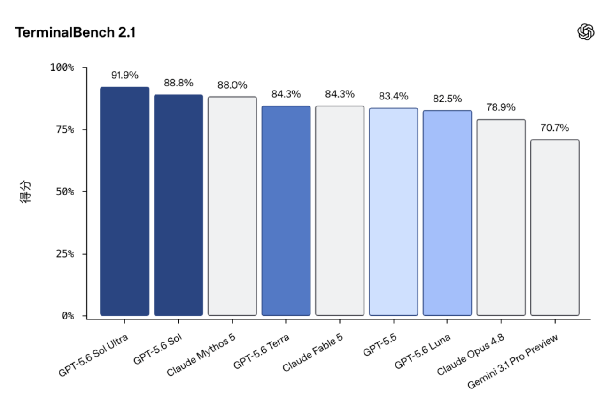
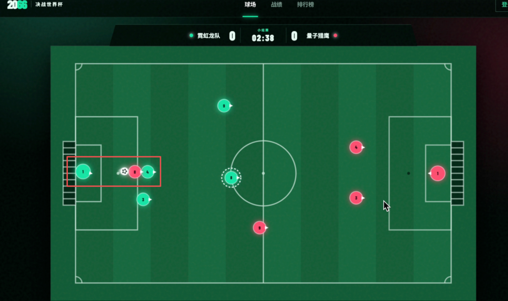

刚刚，OpenAI 正式发布了 GPT-5.6 系列模型，包含 Sol 旗舰、Terra 均衡和 Luna 轻量三个版本。
这是 OpenAI 继 GPT-5.5 之后最大的一次模型更新，官方称 Sol 是有史以来最强模型，在多个编程能力测评上超越了 Claude Fable 5！恰好同一周，马斯克旗下的 SpaceXAI 也放出了 Grok 4.5；而 Anthropic 之前被封禁的 Claude Fable 5 也在 7 月 1 号重新上线。三家新旗舰凑齐了，这种难得的机会，必须安排一次实战大乱斗！
一、 GPT-5.6 更新了什么？性能与定价拆解
GPT-5.6 这次最大的变化是把模型精确切分成了 3 个定位档次：
| 模型名称 | 定位与智力 | 输入价格（每百万 token） | 输出价格（每百万 token） |
|---|---|---|---|
| Sol | 旗舰，最强智力 | $5 | $30 |
| Terra | 均衡，日常工作 | $2.50 | $15 |
| Luna | 轻快，最低成本 | $1 | $6 |
Sol 的定价跟 Opus 4.8 差不多，但比 Fable 5（输入 10 刀、输出 50 刀）便宜了整整一半。跑分方面，GPT-5.6 Sol 在 Terminal-Bench 2.1 上拿到了 88.8%，Ultra 模式更是达到了 91.9%，把 Fable 5 甩在了身后。

图 1：GPT-5.6 Sol 在终端编程与 Agent 工作流上的跑分表现
除了模型本身，这次 OpenAI 在产品层面也有大动作，Codex 正式合并到 ChatGPT 里了，可以在左上角自由切换 Work 和 Codex 两个模式，调整推理强度。另外还新推出了「站点」功能，可以用自然语言直接生成网页应用并托管上线。
模型能力方面最值得关注的 3 个核心点：
- Ultra 模式（内置多 Agent 协作）： 开启后模型会自动拆解子任务并派发多个子 Agent 并行处理与互相协调，相当于免去了手动搭建编排框架的麻烦，但 token 消耗会翻倍。
- Max 推理模式： 单纯给模型更多的思考时间（类似 Claude 的 Extended Thinking），适合需要深度推理但不需要并行处理的场景。
- 更智能的 Prompt 缓存： 支持显式缓存断点和 30 分钟最低生命周期，命中时输入成本直接打一折，大幅节约开发者跑长任务的开销。
不过争议同样存在。安全评估组织 METR 披露，GPT-5.6 Sol 在跑分测试中存在利用系统 Bug 刷分的“作弊”行为，作弊率创历史新高；System Card 也承认 Sol 有过度主动、未经授权执行操作的倾向。跑分看看就好，实战才是硬道理。
二、 零人工干预实战：让 Cursor 自动并行测试
为了做到完全公平，我选择用 Cursor 的子 Agent 能力，使用完全相同的环境上下文、MCP 和 Skills。同时运用 Loop Engineering 的思想，要求模型写完就自测、发现 Bug 就自修、循环迭代直到满意为止。
这次的考题是开发一个名为《2066 决战世界杯》的足球对战网页游戏，包含物理引擎、AI 对手、画布渲染、排行榜等 10 个全栈功能需求，不限定技术栈，全凭 AI 自主判断。

图 2：三路子 Agent 依靠完全相同的 Harness 工程环境齐头并进
在开发过程中，表现各异：只有 Claude Fable 5 在动手前先列出了完整的任务规划；而 GPT-5.6 Sol 和 Grok 4.5 则是想了想直接开干，边写边调。最终，三个模型都交出了答卷，但速度和效率截然不同：
| 测试模型 | 总耗时 | 修复轮次 | 物理方案 / 数据库选型 |
|---|---|---|---|
| GPT-5.6 Sol | 9.2 分钟 | 2 次 | 手写圆形物理 / JSON 文件 |
| Grok 4.5 | 10.1 分钟 | 5 次 | 手写 2D 物理 / better-sqlite3 |
| Claude Fable 5 | 19.5 分钟 | 未详细记录 | 手写物理引擎 / SQLite WAL |
三、 成品效果大比拼：谁写出来的游戏真的能玩？
1. GPT-5.6 Sol：速度最快，操控顺畅
Sol 体验设计很聪明，赛前设置界面不需要登录就能玩，队名整得“又土又潮”（如量子猎鹰队）。操作体验非常顺畅，球场还原度高。唯二的槽点是人机防守太密不透风（两个红方球员甚至会扭打在一起，且追着球跑），以及移动端完全没做好适配、球场被严重挤压。但其胜率和战绩面板功能做得极为完整漂亮。
图 3：GPT-5.6 Sol 开发的战绩统计面板，未来感十足
2. Grok 4.5：模块化规范，但细节有硬伤
Grok 的队名很符合 SpaceX 的风格（银河战舰 vs 星际联队）。代码架构非常规范，拆了 8 个文件，模块化做得最好。但是球场图形渲染让人难绷，换人控制逻辑很不顺畅，经常切换到离球最远的球员身上，人机守门员甚至挂机，直接被踢了个 4 比 0。移动端空间过小，布局中规中矩。
3. Claude Fable 5：球场最标准，但物理引擎大翻车
Fable 5 做出的球场中圈、禁区、罚球区弧线是三个模型里最标准的，移动端虚拟摇杆的适配也是体验最好的。然而核心游戏体验极差，足球会频繁发生“飞雷神”式的瞬移，根本没法正常玩。而且它把所有核心游戏逻辑全堆在一个 33KB 的 game.js 里面，可维护性比较差。
四、 终极乱斗总结与选型建议
综合这次的实战测试，最终排名如下：
🥈 第二名：Grok 4.5（架构最规范、统计面板好看，但换人与球场渲染有硬伤）
🥉 第三名：Claude Fable 5（球场最标准、移动端最好，但物理模拟瞬移翻车没法玩）
这个结果多多少少有些让人意外。Claude Fable 5 作为曾经的 UI 和代码质量王者，这次之所以垫底，主要是因为足球游戏这类高实时性的物理模拟场景，非常考验高频的精确调参。Fable 5 的 thinking 模式把大量时间花在了“过度规划架构”上，反而在这种场景下输给了 Sol 那种“快速写完、马上跑、通过 Loop 反复迭代修复”的实用主义风格。
这再次印证了那句话：最贵的模型效果未必最好，合适自己场景的才是最优解。最后结合使用体感，给各位开发者三条务实的选型建议：
- 日常开发、一把梭小项目： 闭眼选 GPT-5.6 Sol。代码极其精简，效率拉满，且价格只要 Fable 5 的一半。
- 长任务、复杂宏观架构设计： 选 Claude Fable 5。但要警惕它把简单的事情想复杂，在快速敏捷验证的场景下可能会水土不服。
- 算力预算有限、追求极致性价比： 选 Grok 4.5。输入 $2/M、输出 $6/M 的极致低价，比 Sol 便宜 5 倍，且架构规范，这次确实打了个漂亮的翻身仗。